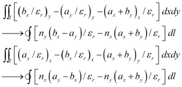
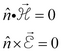
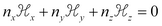
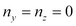
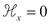
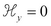
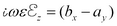
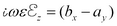

|
Boundary Conditions |

  
|
|
Boundary Conditions |
|
To see what the natural boundary conditions imply, integrate the second order terms of (3.13) by parts:
(3.15) 
We have shown only the contour integrals arising from the integration, and suppressed the area integral correcting for varying  . This term will be correctly added by FlexPDE, and does not contribute to the boundary condition.
. This term will be correctly added by FlexPDE, and does not contribute to the boundary condition.
The integrand of the contour integrals is the value represented by the natural boundary condition statement in FlexPDE.
The boundary conditions which must be satisfied at an electrically conducting wall are
(3.16) 
The first condition requires that . At a vertical wall, , and the condition becomes simply . Similarly, at a horizontal wall, it is . Both are easily expressed as Value boundary conditions. At an oblique wall, the condition can be expressed as an implicit value boundary condition for one of the components.
The second condition requires that the tangential components of  must vanish in the wall. In particular,
must vanish in the wall. In particular,  is always tangential and must therefore be zero. From (3.3) we can derive . But this is just the first term of the integrands in (3.15), so at a vertical wall we can set Natural(
is always tangential and must therefore be zero. From (3.3) we can derive . But this is just the first term of the integrands in (3.15), so at a vertical wall we can set Natural( )=0, and at a horizontal wall we can use Natural(
)=0, and at a horizontal wall we can use Natural( )=0. These are the reverse assignments from the value conditions above, so the two form a complementary set and completely specify the boundary conditions for (3.13). Similar arguments can be used at a magnetic wall, resulting in a reversed assignment of value and natural boundary conditions.
)=0. These are the reverse assignments from the value conditions above, so the two form a complementary set and completely specify the boundary conditions for (3.13). Similar arguments can be used at a magnetic wall, resulting in a reversed assignment of value and natural boundary conditions.
Page url: index.html?boundary_conditions3.html